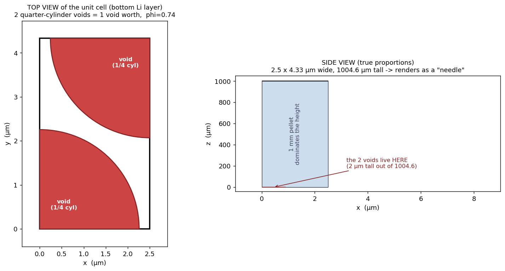
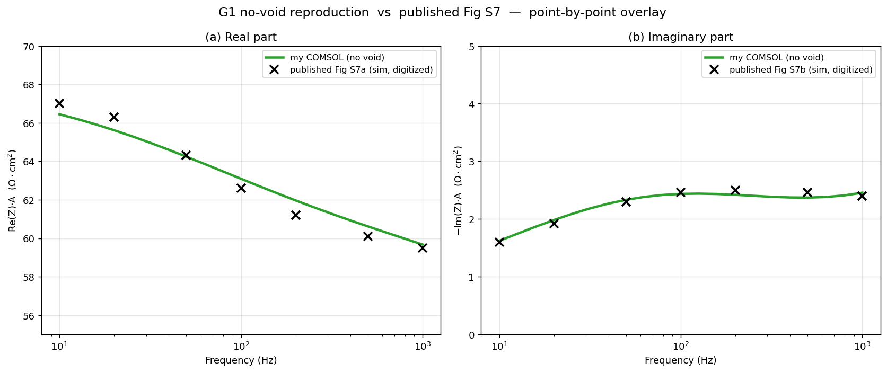
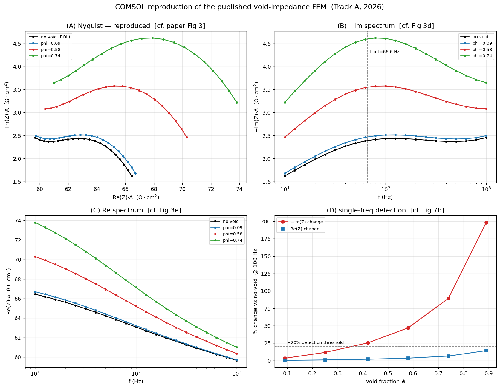
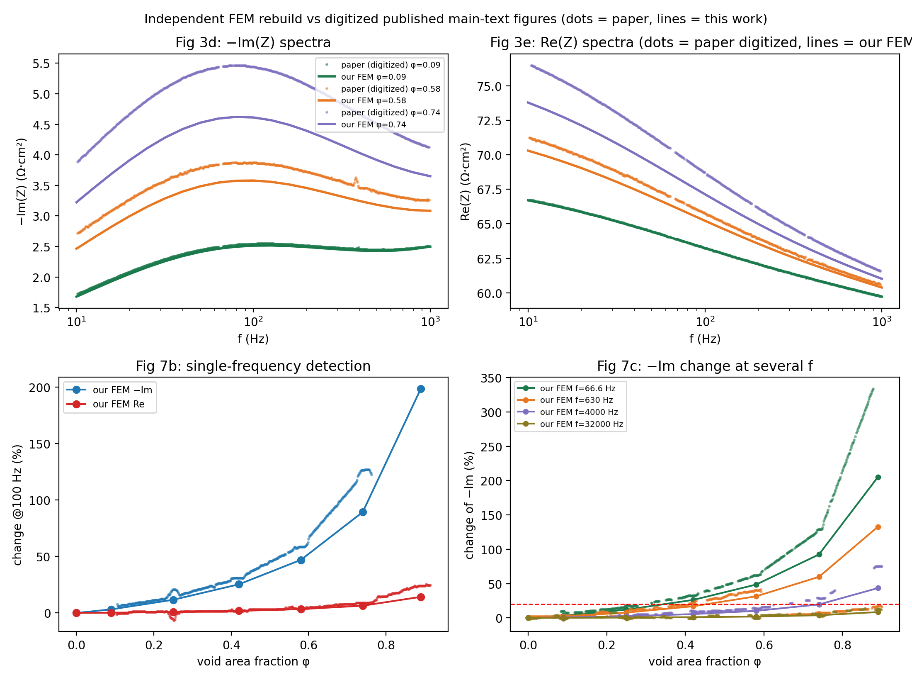
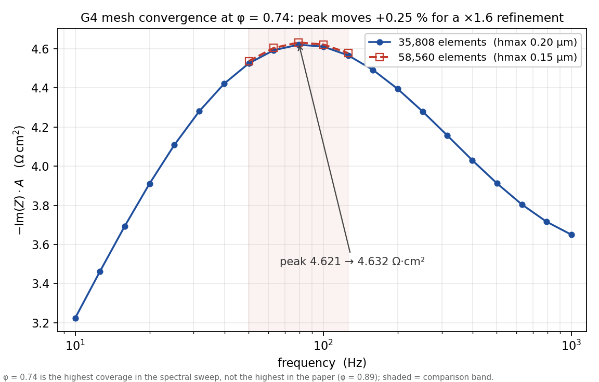
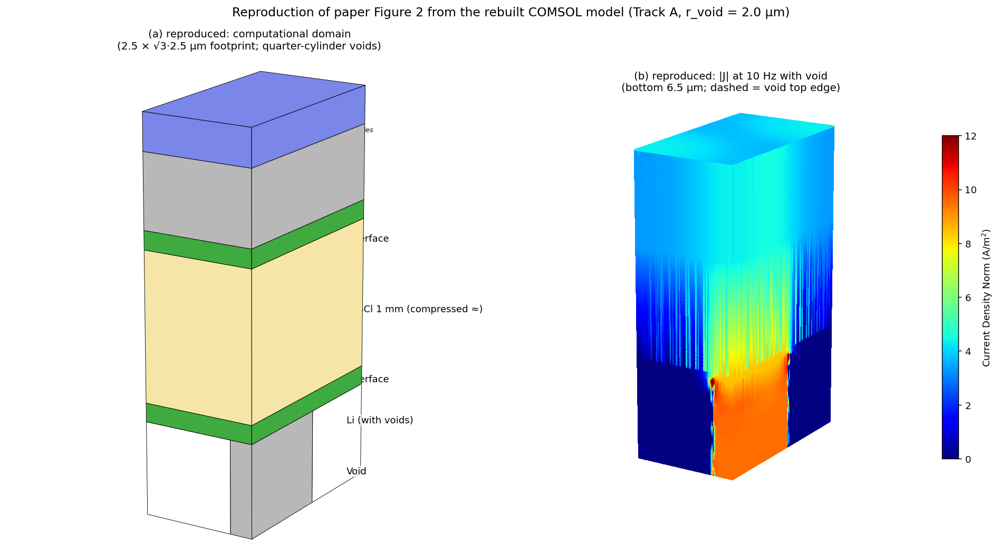
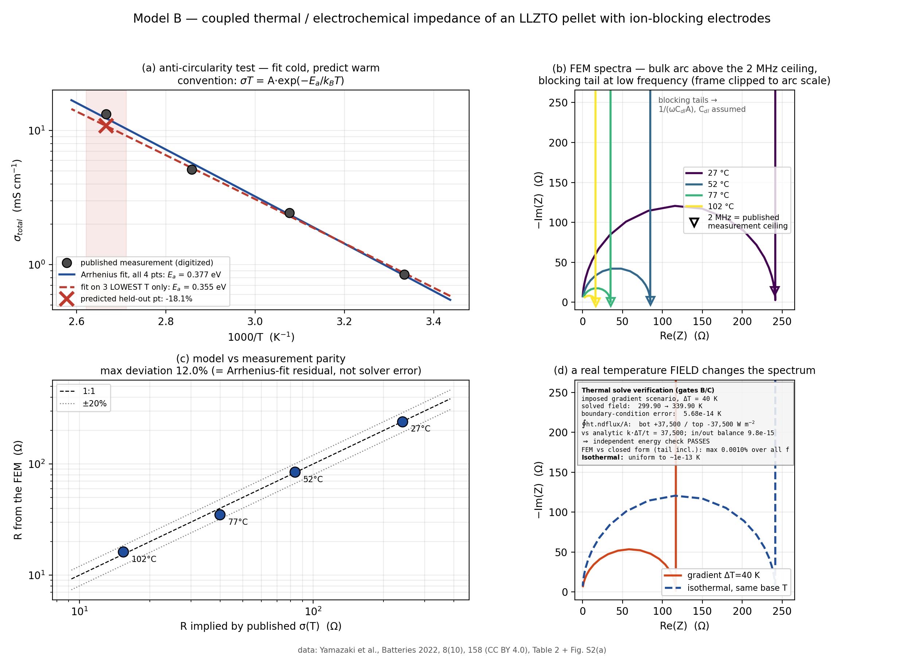

1 · Model cards
One card per model. Sizes are the shipped, solution-stripped files; the strikethrough of every "was" size is deliberate — shipping solved files would be bulk without insight.
Track A — single-frequency void detection, rebuilt
A ground-up COMSOL reproduction of the published single-frequency operando void-detection study (ACS Electrochemistry 2026 — co-first-author paper): layered unit cell, void sweep, detection curves, and the numerics checks behind them.

The validated skeleton: a layered unit cell whose 3-frequency no-void impedance matches the analytic R-CPE circuit to 0.20% — the smoke test every later model builds on.
⬇ TrackASmokeTest.mph · 0.63 MB
The 41-frequency no-void spectrum that ties the rebuild to the published paper: 0.010% vs the analytic circuit, and 7/7 digitized points of the published Fig S7 within 4%.
⬇ TrackAG1NoVoidSpectrum.mph · 0.64 MB
The heart of the reproduction: cylindrical voids carved into the Li layer on a 5 um triangular lattice, sweeping void coverage to show -Im(Z) rising far faster than Re(Z).
⬇ TrackAG2VoidSweep.mph · 2.96 MB
The paper's early-detection method rebuilt: %change of -Im and Re at a single frequency vs void fraction, compared point-by-point against the digitized published figures.
⬇ TrackAG3SingleFrequencyDetection.mph · 3.31 MB
The credibility check: at the worst void fraction the -Im peak moves only 0.2% across a 34k-to-93k element refinement, so the reproduction rests on converged numerics.
⬇ TrackAG4MeshConvergence.mph · 4.22 MB
The paper's Figure 2 rebuilt: the 3-D computational domain and the current-density field crowding around a void at low frequency.
⬇ TrackAFig2CurrentDensity.mph · 2.88 MBModel B — thermal-EIS coupling
Coupled Heat Transfer + impedance models of a garnet pellet, correlated against published CC BY conductivity-vs-temperature data.

A coupled Heat Transfer + impedance model of a garnet pellet, correlated against published CC BY sigma(T) data with a fit-cold-predict-warm hold-out (-18% on the held-out point).
⬇ ModelBThermalEisIsothermal.mph · 0.47 MBThe thermal showpiece: a genuinely solved 40 K through-thickness temperature field (energy balance exact to machine precision) reshaping the impedance spectrum.
⬇ ModelBThermalEisGradient.mph · 0.46 MBModel C — fixture stress, two engines
The COMSOL side of the two-engine fixture-stress cross-validation on the mechanical page — bonded benchmarks and the contact-physics pair behind the rim-riding discovery.

COMSOL twin of a Fusion 360 fixture-stress study, bonded idealization: engines agree on every convergent quantity (statics exact, stiffness within 12%).
⬇ ModelCFixtureCaseABenchmark.mph · 2.92 MB
The Grafoil-pad variant of the two-engine benchmark: the compliant pad regularises the edge field and the engines match the face peak to 13%.
⬇ ModelCFixtureCaseBBenchmark.mph · 3.00 MB
The answer the bonded models hid: with true unilateral contact the rigid platen rides the pellet rim - the centre unloads and the whole 633 N crowds into a sub-mm edge ring.
⬇ ModelCFixtureCaseAContact.mph · 2.83 MB
Why fixtures need compliant interlayers: under contact physics the Grafoil pad restores near-uniform ~5 MPa across the pellet face, verified by an exact statics audit.
⬇ ModelCFixtureCaseBContact.mph · 3.01 MB